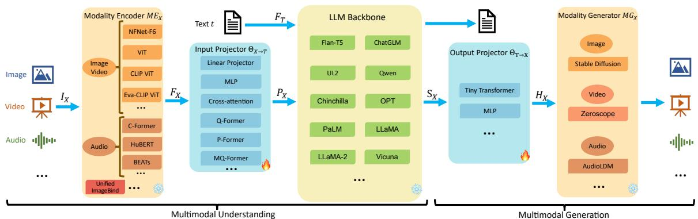

核心组件
整体架构设计
包含
5个关键组件
：模态编码器、输入投影器、LLM骨干、输出投影器、模态生成器
仅
理解模型
包含前3个组件，
生成模型
需完整5组件
可训练参数占比约
2%
，主要依赖LLM骨干的规模
模态编码器
图像编码
：CLIP ViT/Eva-CLIP ViT等视觉Transformer，支持224-448px分辨率
视频编码
：统一采样5帧，处理方式与图像相同
音频编码
：HuBERT/Whisper等语音模型，3D点云使用ULIP-2编码
多模态统一编码
：ImageBind支持6种模态的联合编码
输入投影器
将其他模态特征对齐到
文本空间
，最小化条件文本生成损失
实现方式包括：
线性投影
/
Q-Former
/
Cross-attention
等
Q-Former需要额外预训练初始化，但能提取更相关特征

Figure 2: 完整模型架构图，展示各组件连接关系与典型实现方案